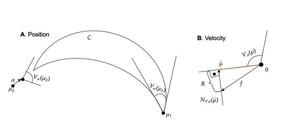
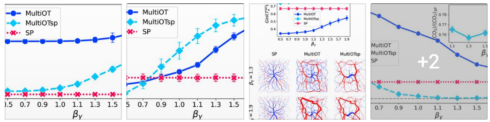
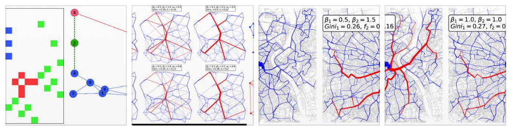
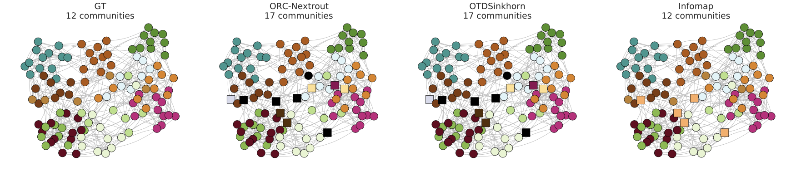
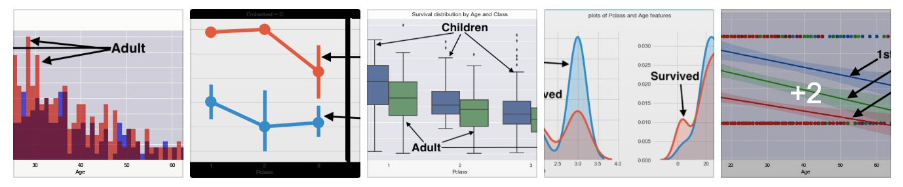
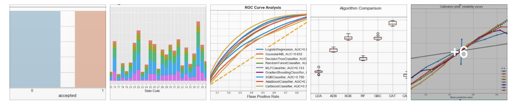

We propose a principled physics-based approach to impose constraints flexibly in such optimal
transport problems. Constraints are included in mirror descent dynamics using the principle
of D'Alembert-Lagrange from classical mechanics. This leads to a sparse, local and linear
approximation of the feasible set leading in many cases to closed-form updates.

Traffic congestion is one of the major challenges faced by the transportation industry.
While this problem carries a high economic and environmental cost, the need for an efficient
design of optimal paths for passengers in multilayer network infrastructures is imperative.
We consider an approach based on optimal transport theory to route passengers preferably along
layers that are more carbon-efficient than the road, e.g., rails.

Modeling traffic distribution and extracting optimal flows in multilayer networks is of the
utmost importance to design efficient, multi-modal network infrastructures. Here, we adapt these
results to study how optimal flows distribute on multilayer networks. We propose a model where
optimal flows on different layers contribute differently to the total cost to be minimized.

Detecting communities in networks is important in various domains of applications. We present an
OT-based approach that exploits recent advances in OT theory to allow tuning for traffic
penalization, which enforces different transportation schemes.

Analysis of Titanic shipwreck is essential in order to understand the historical data. The
correlation between the independent and dependent features was observed in order to determine
features that may have impact on passenger survival. In this paper, we explored the Titanic data
and four machine learning algorithms.

Machine learning and data-driven techniques have
become very famous and significant in several areas in recent
times. In this paper, we discuss the performances of some machine
learning methods
on both loan approval.